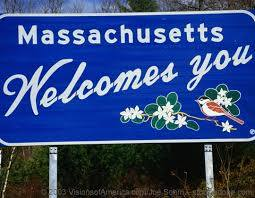

Dashboard
No Parties!
Please do not hold any parties or gatherings!
Parties are one sure way for COVID-19 to spread rapidly. There
is no social distancing when people are crammed into an area for
long periods of time. Even a mask won't be enough to help you!
On top of that, alcohol could make people more vulnerable to COVID-19.
Many studies show that after drinking alcohol, people tend to be
more immune to viral diseases like COVID-19.
I know many people miss seeing their friends but, it is not worth it to
hang out with friends and put people at risk of contracting COVID-19.
US and Massachusetts
Number of positive cases in US: {{statsUS.positive}}
Number of new cases in US: {{statsUS.new}}
Number of negative cases in US: {{statsUS.negative}}
Number of recovered patients in US: {{statsUS.recovered}}
Number of deaths in US: {{statsUS.deaths}}
Number of new deaths in US: {{statsUS.newDeaths}}
Number of positive cases in MA: {{statsMA.positive}}
Number of new cases in MA: {{statsMA.new}}
Number of negative cases in MA: {{statsMA.negative}}
Number of recovered patients in MA: {{statsMA.recovered}}
Number of deaths in MA: {{statsMA.deaths}}
Number of new deaths in MA: {{statsMA.newDeaths}}
Senior Design Software Mini-Project 2020
© Steven Tong & Jaden Tayag 2020